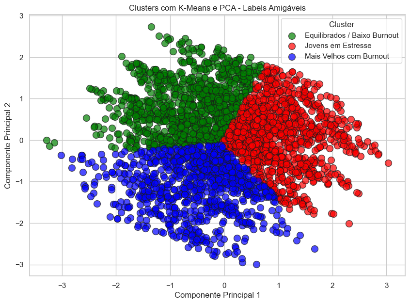
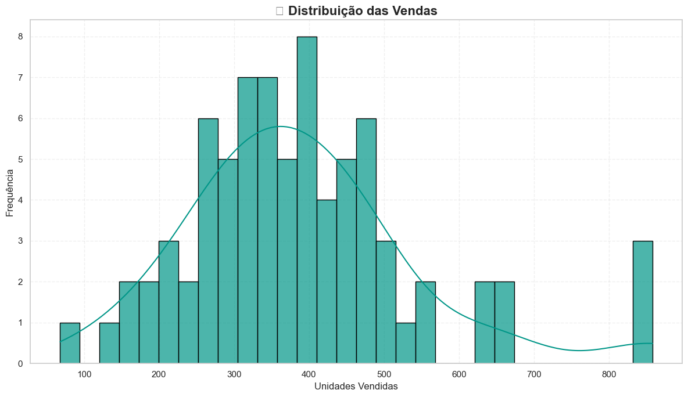
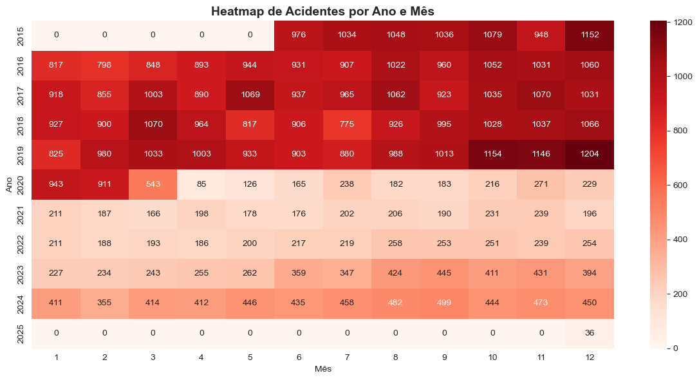

Sobre mim
Profissional de Dados e Analytics com sólida experiência no apoio à tomada de decisão baseada em dados e na geração de insights para o negócio. Atualmente atuo na área comercial, desenvolvendo dashboards, indicadores e análises no Power BI, focando em performance, previsibilidade e estratégias de crescimento.
Minha trajetória combina visão de negócios com forte base técnica, com experiência em vendas, logística e relacionamento com o cliente. Já trabalhei com SAP (SD), Salesforce, Power BI, SQL, Python e Pentaho Data Integration para extrair, transformar, analisar e apresentar dados de forma eficaz.
Atualmente, estou concluindo uma especialização em Ciência de Dados, aplicando técnicas práticas de ETL, modelagem de dados, Machine Learning e análise de séries temporais, fortalecendo minha atuação em Analytics e Previsão de Demanda.
Áreas de interesse: Análise de Dados, Business Intelligence, ETL, Machine Learning, Séries Temporais, Visualização de Dados, Estratégia Comercial e Operacional.
Formação: Análise e Desenvolvimento de Sistemas | Especialização em Ciência e Análise de Dados (Universidade de Pernambuco)
Principais ferramentas: Python | Power BI | Pentaho Data Integration | SQL
Projetos
Mental Health at Work (2025)
Fonte de dados: Kaggle – Post-Pandemic Remote Work Health Impact 2025
App na nuvem com Streamlit: mental-health-at-work.streamlit.app
Projeto no GitHub: github.com/FlaviaCosta1037/mental-health-at-work
Projeto que apresenta um panorama global de como os arranjos de trabalho remoto, híbrido e presencial impactam a saúde mental e física dos funcionários na era pós-pandemia. Coletado em junho de 2025, com respostas de diferentes continentes, setores, faixas etárias e cargos.
Previsão de Vendas - Séries Temporais
App: previsao-de-vendas-series-temporais.vercel.app
Projeto no GitHub: https://github.com/FlaviaCosta1037/previsao-de-vendas-series-temporais/blob/main/main.ipynb
Projeto acadêmico que desenvolve e compara modelos preditivos para estimar o volume de vendas trimestral de uma empresa multinacional do setor industrial, usando técnicas de séries temporais (ARIMA, SARIMAX) e Machine Learning (SVR), incorporando variáveis financeiras.
Previsão de Acidentes de Trânsito
Projeto no GitHub: https://github.com/FlaviaCosta1037/previsao_acidentes_transito/blob/main/main.ipynb
Projeto focado na análise e previsão de acidentes de trânsito utilizando técnicas de ciência de dados e séries temporais.
Contato
📧 flaviagoncalvescosta@gmail.com
💻 GitHub